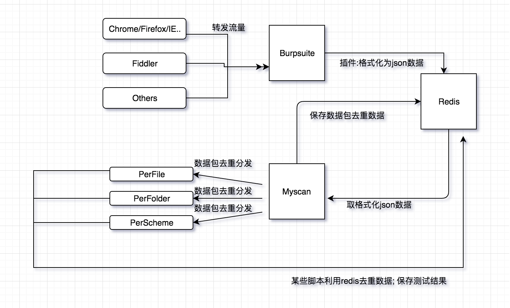

概述：CVE 扫描工具架构综述。主要目的是查看识别 CVE、CNVE 等的识别逻辑。
⚠ Switch to EXCALIDRAW VIEW in the MORE OPTIONS menu of this document. ⚠ You can decompress Drawing data with the command palette: ‘Decompress current Excalidraw file’. For more info check in plugin settings under ‘Saving’
匹配程序：框架是否具有可识别漏洞 ID 的逻辑。
【架构】CVE扫描工具架构收集
cve-bin-tool
匹配程序：⭐⭐
官方网站：Welcome to CVE Binary Tool’s documentation! — CVE Binary Tool 3.4 documentation
简介： 主要用于扫描系统中是否包含已知的漏洞。可以扫描二进制文件中超过 200 个常见的、易受攻击的组件，例如（openssl、libpng、libxml2、expat 等等），也可以扫描所使用的已知组件，可以获得与 SBOM 相关的已知漏洞列表或组件版本和版本列表。
项目介绍中对架构有完整的描述，简单转述下，仅供个人学习。
架构
项目架构图如下所示：

工作流程
- Hexo Stellar 主题装修笔记 - 宇宙尽头的餐馆相关为 这一部分详细内容可以看官方描述：CVE Binary Tool User Manual — CVE Binary Tool 3.4 documentation
- Download CVE Data (from NVD, Redhat, OSV, Gitlab, and Curl).
- This happens once per day by default, not every time a scan is run.
- On first run, downloading all data can take some time.
- Create/read a component list. There are two modes of operation:
- Create CVE List
- This looks up all components found or read from an existing bill of materials and reports back any known issues associated with them
- Include triage/additional data
- There are several options for adding triage/notes, information from previous reports to track vulnerability change over time, or known fix data
- Generate report in one or more formats (console, json, csv, html, pdf)
myscan
简介
匹配程度： ⭐⭐⭐⭐
项目地址
简介
myscan是参考awvs的poc目录架构，pocsuite3、sqlmap等代码框架，以及搜集互联网上大量的poc，由python3开发而成的被动扫描工具。此项目源自个人开发项目，结合个人对web渗透，常见漏洞原理和检测的代码实现，通用poc的搜集，被动扫描器设计，以及信息搜集等思考实践。
myscan依赖burpsuite和redis，需启动redis和burpsuite插入myscan的插件。而且不支持 Windows.
这里仅参考设计思路。
架构

myscan 工作流程
依靠burp强大的抓包和解析数据包的功能，插件调取api把burp的请求体和响应体的处理数据整合成json数据传输到redis。
myscan调取redis数据，对每一个request/response数据包进行perfile(访问url)、perfolder(每一个目录)、perscheme(每一个数据包)分类去重，通过redis分发到各个子进程，然后运行相应的poc。
总结
根据 burp 的响应被动的形式，需要事先设置好 POC 与 response 的对应关系。
可参考的逻辑：
实现上还是通过流量去匹配，查询到特定的流量后，根据 CVE 和关键字的匹配关系，重新运行相关 CVE 查看是否得到对应的响应，进而判断该漏洞是否存在。
CVE vulnerability data
- Red Hat Security Data API | Red Hat Product Documentation
- Vulnerability APIs
- OSV - Open Source Vulnerabilities
- NVD - Home
- GitLab Advisory Database
- User Guide | CVE
RedHat Parameters
Redhat CVE Json 字段说明
| Name | Description | Example |
|---|---|---|
| before | Index of CSAF documents before the query date. [ISO 8601 is the expected format] | 2016-03-01 |
| after | Index of CSAF documents after the query date. [ISO 8601 is the expected format] | 2016-02-01 |
| rhsa_ids | Index of CSAF documents for RHSA_IDs separated by comma | RHSA-2018:2748,RHSA-2018:2791 |
| bug | Index of CSAF documents for Bugzilla Ids | 1326598,1084875 |
| cve | Index of CSAF documents for CVEs | CVE-2014-0160,CVE-2016-3990 |
| severity | Index of CSAF documents for severity | low,moderate,important,critical |
| package | Index of CSAF documents which affect package | samba,thunderbird |
| page | Index of CSAF documents for page number | Default: 1 |
| per_page | Number of index of CSAF documents to return per page | Default: 1000 |
| created_days_ago | Index of CSAF documents created days ago | 10 |
CVE 字段说明
相关链接
Excalidraw Data
Text Elements
项目地址和简介
CVE-bin-tool
workflow
工具整理
文章一览
myscan
文章一览
项目地址和简介
架构
workflow
Element Links
jwVoyh0J: 【架构】CVE扫描工具架构收集 > cve-bin-tool w0B9FGes: 【架构】CVE扫描工具架构收集 > 【架构】CVE扫描工具架构收集 CxS5Pa8i: 【架构】CVE扫描工具架构收集 > 工作流程 heCK5htv: 【架构】CVE扫描工具架构收集 > myscan AqF2xZli: 【架构】CVE扫描工具架构收集 > #简介 9gXlWdr5: 【架构】CVE扫描工具架构收集 > myscan 工作流程
Embedded Files
aa666f22951fe1668cad96634a251aa87c7aabbb: 【架构】CVE扫描工具架构收集/IMG-20240918155917722.png 18ae997fbc30639e8c1af682bd607724d494fa2e: 【架构】CVE扫描工具架构收集/IMG-20240918155918425.png
{kind=link}